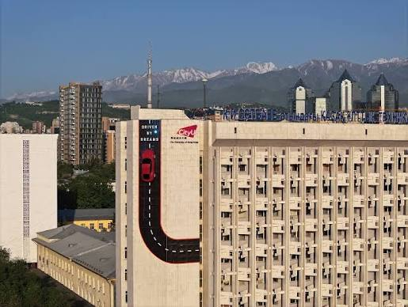
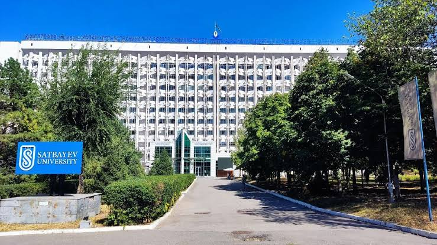
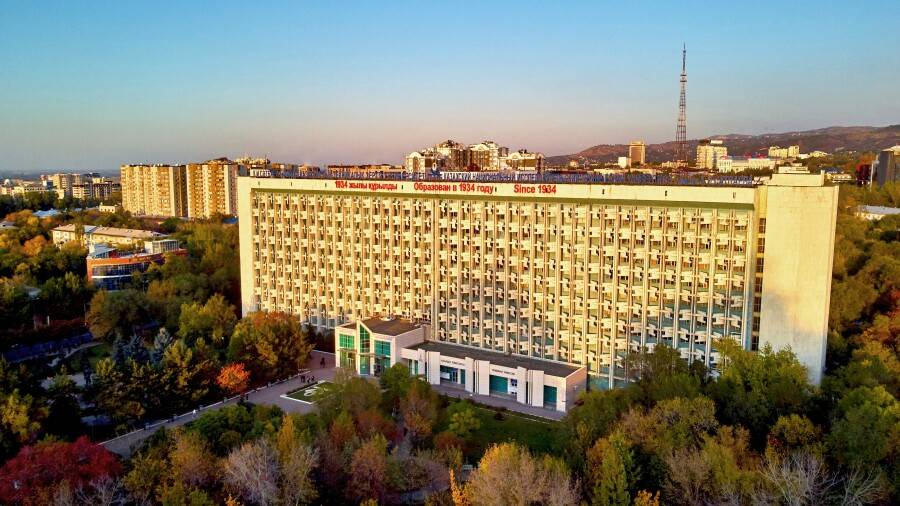

Three pictures from the Saturday sessions: the GUK from the different angles, the City U car, that is parked in the wall of the main building, the alley leading to the main building, the old authentic picture of Satbayev University or maybe not so old, but before renovation.


